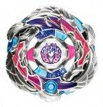

Samurai Pegasis W105R²F
| Samurai Pegasis W105R²F | |
|  | |
| Number: | BBG-26 |
|---|---|
| System: | Beyblade Zero-G |
| Type: | Attack |
| Element: | God |
Contents
Stone Face: Pegasis
- Weight: 1.2 grams
This diamond-shaped Face illustrates a Pegasus, which is a winged horse as well as one of the 88 constellations. The Zero-G version of the Pegasis Face mark features a slightly more simplistic and comical rendition.
Chrome Wheel: Pegasis
- Weight: grams
Like the Big Bang 4D Metal Wheel, the Pegasis Chrome Wheel has three wings, and its design is made of interlaced feathered wings. Three smaller wings form protruding hook-like knots in the design, each placed at equal distances from the others. Two Pegasus heads with their neck circle the inner portion too. The stickers applied on this Chrome Wheel are reminescent of the Phantom Fox MS HMS Beyblade, notably the blue L-shaped stickers at the top and bottom, as well as the red stickers on the rest of the circumference.
When used as the top Chrome Wheel in a Synchrom
Pegasis is generally uncompetitive on the top of a Synchrom. In this position, its contact points are very blunt, as the dull sides of the wings are those exposed in contact in that spin direction. Pegasis cannot make nearly as powerful or consistent attacks when used as the top Chrome Wheel in a Synchrom, and can be utilized much more effectively on the bottom of a Synchrom.
When used as the bottom Chrome Wheel in a Synchrom
When at the bottom in a Synchrom, Pegasis is definitely more competitive in terms of Smash Attack. Unlike when it's the top Chrome Wheel in a Synchrom, Pegasis' primary contact points are flipped, causing the sharper, more defined edges of the wings to make contact while in right rotation. Although its win rate will not reach very high with most Attack Chrome Wheels, it performs quite decently with Gryph, which boosts its spin velocity and fully reveals Pegasis' contact points due to Gryph's small diameter.
When used in Synchrom with another Pegasis
Pegasis has proven useless when in Synchrom with another Pegasis. Its contact points become more blunt and constricted, and the smash it produces is barely applicable. While it can be a decent Attack substitute on the bottom of a Synchrom, Pegasis should never be used in a doubled combination.
Use in Attack Customization
Pegasis, for the reasons stated above, has use in the Attack combo, MSF-H Pegasis Gryph W145 R2F.
Crystal Wheel: Samurai
- Weight: 5.4 grams
This Crystal Wheel has a general shape that tries to embrace Ifraid's own relief curves. On one side, it has a big orb known as a crystal, and it is the part that truly combines Samurai with its Chrome Wheel. To compensate with this big orb, the other side is generally bigger so an overall balance can be gained.
However, Samurai can also be placed right on top of Ifraid. In its Chrome Up Mode, Samurai barely protrudes on the sides of the Ifraid Chrome Wheel, but, following this mode change, in Crystal Up Mode, it logically absorbs most if not all of the impacts and offers a completely different performance.
While Samurai usually confers a Zero-G Beyblade the imaginary Fire element, Samurai Pegasis is considered a God element. Like all Crystal Wheels, it is too light to have use against most Synchrom and 4D customizations.
Track: Wing 105
- Weight: 1.2 grams
Wing 105, or W105, consists of two curved wing-like fins that slant downwards, similar to DF145. The main purpose of this Track is to push air upwards to provide extra Stamina, but the effect this Track produces is negligible, therefore it has as much competitive value as a regular 105 track. W105 should only be used in the absence of 85, 90, and 100 in both Stamina and Attack customizations.
Bottom: Right Rubber Flat
- Weight: 0.8 grams
Right Rubber Flat, shortened to R²F, is?competitively speaking?the most vital part of this Beyblade. R²F is very similar to RF, and is an overall upgraded version of it. R²F consists of six curved rubber spikes that face to the right intended predominantly for use in right-spin combos. This new design creates more traction with the stadium floor, causing it to move more quickly than its predecessor, RF. However, its stamina is decreased due to the increase in speed and friction compared to the original RF. This also means an R²F will wear down faster than an RF.
Since this is a rubber Attack Bottom, a new R²F is harder to control than a new RF, mainly because it moves much faster. This makes RF a good choice for controllability and stamina, while R²F is a better choice for speed and power. Like RF however, it is essential to wear the rubber of R²F before competitive use, as this allows the Beyblade to spin into a "flower pattern" more easily. A clear sign that shows when an R²F is in its prime is when the indented lines that form a star shape inside R²F's perimeter are nearly gone. Some R2F Bottoms feature different densities of rubber. Some may be soft, while others may be harder. The density of rubber in any given R2F tip is usually random.
Mold Variations
Throughout the course of its release, each company (Takara-Tomy, Sonokong, Hasbro) has released its own mold of R²F which revolved around the different placement of a 'bar' on the inside of the tip, (a lack thereof) which seem to be made at random.
Mold 1 (Takara-Tomy/Sonokong)
This mold contains a thick bar in the middle of the tip, securing the Rubber of R²F.
Mold 2 (Original Hasbro release)
Mold 3 (Hasbro GanGan Galaxy Set Release)
Use in Attack Customization
R²F can be utilized in any situation where RF would be used to increase overall speed. While its Stamina is considerably lower, it isn't a large drawback in light of Attack's purpose as a type, and the speed R²F can be advantageous. As far as Attack customizations go, R²F and RF are generally interchangeable.
R²F can be used very effectively in the following top-tier Attack combinations:
- MSF-H Wyvang Wyvang GB145R²F
- Balro Balro CH120R²F
- MSF-M Bahamdia Dragooon BD145R²F
- Wyvang Dragooon SA165R²F
- MF-H Flash Orion GB145R²F
Other Versions
- Samurai Pegasis W105R²F Brave Ver. - Metal Fight Beyblade 4D X Zero-G Ultimate Tournament Nintendo 3DS video game Limited Edition (Blue Chrome Wheel with red and orange stickers, yellow Clear Wheel, clear blue Track and Bottom)
- Samurai Pegasus W105R²F - Hasbro Shogun Steel Starter (Clear red Samurai, opaque blue Track and Bottom)
Gallery
-
Quarter side view
Overall
The Pegasis Chrome Wheel is a decently effective Attack Chrome Wheel. However, it is outclassed by Wyvang, Balro, Flash and Bahamdia Dragooon. If you already own top-tier Attack Chrome Wheels, such as Wyvang and/or Balro, then Pegasis will not be much use to you. R²F is definitely a staple piece that every Blader should own at least one of, but if you are not looking for the Pegasis Chrome Wheel in addition to R²F, then R²F can be found with much less expensive Beyblades, such as Galaxy Pegasis W105R²F and a few Sets. Overall, this Beyblade should only be purchased by those who enjoy experimenting with Attack types or for collection purposes.